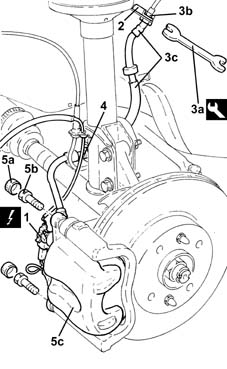
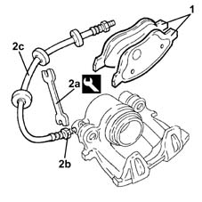
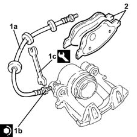
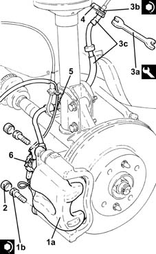

3310A30 FRONT BRAKE CALIPER (one) - R.R.
- Path
- Procedures > 33 BRAKING SYSTEM > 3310 DISC BRAKES > 3310A FRONT DISC BRAKES > 3310A30 FRONT BRAKE CALIPER (one) - R.R.
- Kind
- repair procedure (removal / refitting; the operation number is the code)
- Applies to
- all engines; all production periods
- Interactive page
- https://sloeber94.github.io/elrnDB-lYpsln/en/#/2429150
Applies to: all engines; all production periods
 Removing
Removing
 Refitting
RefittingPosition the vehicle on the ramp.
Ensure that the ignition key is in OFF position, then disconnect the battery negative terminal (-).
 | Name | Connector |
|---|---|---|
- | Battery |
FOR LEFT BRAKE CALIPER
Proceed with removal 4450B02 left front wheel r r .
FOR RIGHT BRAKE CALIPER
Proceed with removal 4450B04 right front wheel r r .
Remove the protective cap on the brake caliper bleed valve.
Connect the collection system (pipe and reservoir) to the bleed valve on the brake caliper.
Loosen the bleed valve on the brake caliper and wait for the brake-clutch reservoir and lines to drain.
1. Disconnect the electrical connection for the brake pad wear sensor.
2. Remove the retaining spring.
3. Use tool (3a) to undo the connector (3b) and disconnect the hose to front brake caliper (3b), rigid pipe side.
 | Name | Country |
|---|---|---|
3a | Box wrench for brake fittings | 1.856.132.000 |
4. Release the block of the hose to the front brake caliper from the fastener on the front shock absorber.
5. Remove plugs (5a), undo the bolts (5b) and remove the front brake caliper assembly (5c).

Applies to: all engines; all production periods
1. Remove the front brake pads from the brake caliper.
2. Using the tool (2a), undo the connectors (2b), then remove the flexible pipe (2c) to the brake caliper.
| Name | Country |
|---|---|---|
2a | Box wrench for brake fittings | 1.856.132.000 |

Applies to: all engines; all production periods
Refitting
Removing1. Refit in its seating the front brake caliper flexible pipe (1a) and tighten the connector (1b) to the specified torque using tool (1c).
 | Fastening | Component | Ø | Value (daNm) |
|---|---|---|---|---|
1b | Connector | HOSE TO FRONT BRAKE CALIPER | M10 | (Front brake caliper side) 1.4 ÷ 1.8 |
| Name | Country |
|---|---|---|
1c | Box wrench for brake fittings | 1.856.132.000 |
2. Refit the front brake pads.

Applies to: all engines; all production periods
1. Refit the rear brake caliper assembly (1a) and tighten the bolts (1b) to the specified torque.
| Fastening | Component | Ø | Value (daNm) |
|---|---|---|---|---|
1b | - | - | - | - |
2. Refit the front brake caliper bolt plugs.
3. Use tool (3a) to tighten connector (3b) of hose to front brake caliiper (3c), rigid pipe side, to the specified torque.
| Name | Country |
|---|---|---|
3a | Box wrench for brake fittings | 1.856.132.000 |
| Fastening | Component | Ø | Value (daNm) |
|---|---|---|---|---|
3b | - | - | - | - |
4. Refit the retaining spring.
5. Secure the block of the hose to the front brake caliper to the fastener on the front shock absorber.
6. Connect the electrical connection for the brake pad wear sensor.

Applies to: all engines; all production periods
Proceed with refitting 0010T64 brake and or clutch fluid check level and top up as necessary .
Proceed with refitting 0010T65 hydraulic brake system bleed air .
FOR RIGHT BRAKE CALIPER
Proceed with refitting 4450B04 right front wheel r r .
FOR LEFT BRAKE CALIPER
Proceed with refitting 4450B02 left front wheel r r .
Connect the negative (-) battery terminal.
Remove the car from the ramps.
Topics linked from this page (5)
- 0010T64 brake and or clutch fluid check level and top up as necessary
- 0010T65 hydraulic brake system bleed air
- 4450B02 left front wheel r r
- 4450B04 right front wheel r r
- A1B Battery ( BATTERY NEGATIVE )